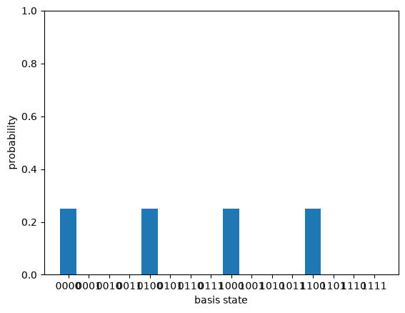

The last three posts built circuits whose payoff was a single global fact read out by interference. This post builds the tool that most of the famous quantum algorithms use to do that readout: the Quantum Fourier Transform. It is exactly the discrete Fourier transform you may know from signal processing, applied to the amplitudes of a state instead of the samples of a signal. The reason it matters is one sentence: the QFT turns periodicity in a state into peaks at the corresponding frequency, and phase estimation and Shor’s algorithm are both ways of cashing that in.
import numpy as np
from qfs import gates
from qfs.statevector import StateVector
from qfs.algorithms.qft import qft_matrix, qft_circuit
from qfs import viz
A change of basis
The QFT on $n$ qubits ($N = 2^n$ amplitudes) is the unitary
$$F_{jk} = \frac{1}{\sqrt{N}}\, \omega^{jk}, \qquad \omega = e^{2\pi i / N}.$$It is a change of basis, from the computational basis (positions) to the Fourier
basis (frequencies). qfs builds it directly from that formula, and it is
unitary, as any change of basis must be.
F = qft_matrix(3)
np.allclose(F @ F.conj().T, np.eye(8))
True
The first thing to look at is the QFT of $|0\rangle$, a state perfectly localized at one position. Its transform is perfectly spread out: every frequency equally.
qft_matrix(3) @ StateVector(3).amps # QFT of |000>: uniform, 1/sqrt(8) everywhere
array([0.35355339+0.j, 0.35355339+0.j, 0.35355339+0.j, 0.35355339+0.j,
0.35355339+0.j, 0.35355339+0.j, 0.35355339+0.j, 0.35355339+0.j])
That is Fourier duality, the same fact that says a sharp spike in time is a flat spectrum and vice versa. Localized in one basis means spread out in the other. It is worth holding onto, because it is the reason the QFT cannot just hand you an amplitude: the information you want is usually smeared across the whole register until you arrange for it to interfere into a peak.
Periodicity becomes peaks
Here is the property the algorithms are built on. Take a state that is periodic in position, a comb with a tooth every $r$ slots, and transform it. The result is a comb in frequency with a tooth every $N/r$ slots. The period $r$ becomes the spacing $N/r$. Read the spacing, recover the period.
N, n, r = 16, 4, 4
comb = np.zeros(N, dtype=complex)
comb[0::r] = 1 # teeth at positions 0, 4, 8, 12 (period r = 4)
comb /= np.linalg.norm(comb)
position = StateVector.from_amplitudes(comb)
frequency = StateVector.from_amplitudes(qft_matrix(n) @ comb)
print("position teeth: ", [i for i, p in enumerate(position.probabilities()) if p > 1e-9])
print("frequency peaks: ", [i for i, p in enumerate(frequency.probabilities()) if p > 1e-9])
position teeth: [0, 4, 8, 12]
frequency peaks: [0, 4, 8, 12]
_ = viz.plot_probabilities(position)

_ = viz.plot_probabilities(frequency)

Four teeth in position, spaced by 4, become four peaks in frequency, spaced by $N/r = 16/4 = 4$. Squeeze the comb tighter (smaller $r$) and the frequency peaks spread further apart: a period-2 position comb gives just two peaks, at 0 and $N/2 = 8$. This reciprocity is the whole mechanism. Shor’s algorithm prepares a state whose period $r$ is the secret it wants (the order of a number modulo the integer being factored), runs the QFT, measures, and reads a multiple of $N/r$ off the frequency register. The next post, phase estimation, is the same move in its purest form.
The same transform, as a circuit
The matrix is the definition. The circuit is how you actually run it on qubits,
and it is surprisingly cheap. Each qubit gets a Hadamard, then a ladder of
controlled phase rotations from the qubits below it, and the whole register is
reversed at the end. qfs builds that with qft_circuit, and it is the same
unitary as the matrix, exactly.
rng = np.random.default_rng(0)
psi = rng.normal(size=8) + 1j * rng.normal(size=8)
psi /= np.linalg.norm(psi)
via_matrix = qft_matrix(3) @ psi
via_circuit = qft_circuit(3).run(state=StateVector.from_amplitudes(psi)).amps
print("gate circuit equals the matrix:", np.allclose(via_matrix, via_circuit))
gate circuit equals the matrix: True
Two details earn a comment. The controlled phase rotations get exponentially
smaller as the qubits get further apart (angle $2\pi / 2^{k-j+1}$ between qubits
$j$ and $k$), which is why a real device eventually stops bothering with the
tiniest ones. And the reversal at the end is not decoration: the natural circuit
produces the output qubits in reversed bit order, so a layer of swaps puts them
back. Getting that reversal wrong is the single most common bug in a
from-scratch QFT, which is why qfs checks the circuit against the matrix and
against Qiskit for every size up to four qubits.
The classical connection, and the catch
This really is the transform from classical signal processing. Up to a global normalization it is the inverse FFT.
v = rng.normal(size=8) + 1j * rng.normal(size=8)
np.allclose(qft_matrix(3) @ v, np.sqrt(8) * np.fft.ifft(v))
True
So why is the quantum version interesting, if it computes the same thing? Two reasons, pulling in opposite directions. The circuit uses about $n^2$ gates to transform $N = 2^n$ amplitudes, where the classical FFT needs $N \log N$ operations: exponentially fewer steps. But you cannot read the $N$ output amplitudes back out. You get one measurement, one sample from the frequency distribution. The art of a quantum algorithm is arranging for that single sample to be the one number you needed, which is exactly what the peak-from-periodicity trick does.
Where this leaves us
The QFT is the readout half of the quantum-algorithm toolkit: a cheap change of basis that converts a period hidden in a state into a frequency you can sample. We have it as a matrix (the definition), as a circuit (the implementation), and checked the two agree exactly.
The next post puts it to work. Phase estimation takes a unitary and one of its eigenstates, and uses the QFT to read the eigenvalue’s phase off a counting register. It is the direct route to Shor’s algorithm, and the first place the QFT stops being a curiosity and starts being a measurement instrument.
Discussion